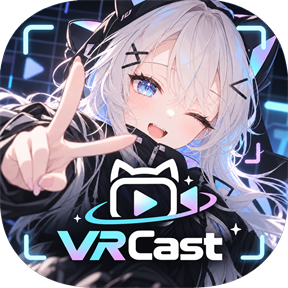

无需打开 Unity 或 VRChat，直接用 VRChat 虚拟形象直播。
VRCast 是一款 Windows 应用，可单独显示 VRChat 用的 3D 虚拟形象，并输出到 OBS 等直播软件或 Discord / Zoom。
只需将虚拟形象导出为 .vrcaster 文件一次，之后无需启动 Unity 或 VCC 即可使用。
VRoid 等的 VRM（.vrm，VRM 0.x / 1.0）无需导出，可直接加载。
.vrcaster
→
VRCast.exe
→
OBS / 虚拟摄像头
通过游戏采集去除背景，叠加到直播画面上。VRCast 窗口中仍保持柔和的米色背景。
导出并重现表情、配件的初始状态、物理摆动（PhysBone 近似）和 Constraint。不会修改原始虚拟形象。
根据麦克风声音判断元音，像 VRChat 一样改变口型。附带自动眨眼。
内置的 MediaPipe 追踪器可驱动头部、眨眼、嘴部、视线，以及手臂、手和手指（也支持 OpenSeeFace）。
待机时会有呼吸、身体摇摆和头部晃动，不会完全静止。可以调整强度和速度，面部追踪时头部跟随本人的动作。
检测笑脸、惊讶、生气、悲伤，并切换为虚拟形象的表情（仅限 MediaPipe，可关闭）。
带有 ARKit 名称 BlendShape 的虚拟形象，眉毛、脸颊和嘴形都会跟随面部动作（仅限 MediaPipe）。
可在 Discord、Zoom 等中将 VRCast Camera 选为摄像头。
在 GPU 上将画面传给 OBS。比捕获更轻，并保留透明（需要 OBS 的 Spout2 插件）。
启动后“开始”标签页会引导你从加载到 OBS 的全过程。支持拖放加载，界面支持简体中文 / 繁体中文 / 英语 / 日语 / 韩语。

只有将虚拟形象导出为 .vrcaster 时需要使用包含该虚拟形象的 Unity 项目。直播时无需启动 Unity 或 VRChat。
可以。直接拖放 VRM 0.x / 1.0 的 .vrm 文件即可加载，也支持表情、眨眼、口型同步和摇摆效果（详情）。
免费。基于 Apache License 2.0 开源，可从 GitHub 或 BOOTH 下载。
在 OBS 中可通过游戏采集或 Spout2 以透明背景叠加。在 Discord、Zoom 等应用中可将虚拟摄像头 VRCast Camera 选为摄像头。
不会。导出不会修改原始虚拟形象。